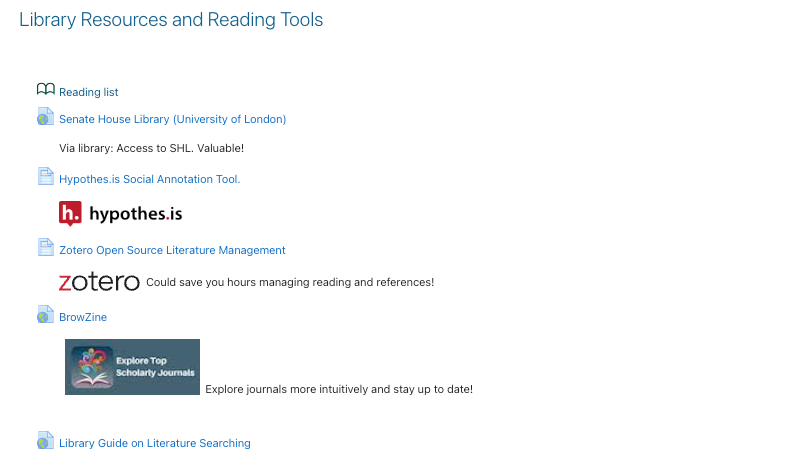
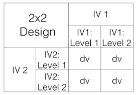
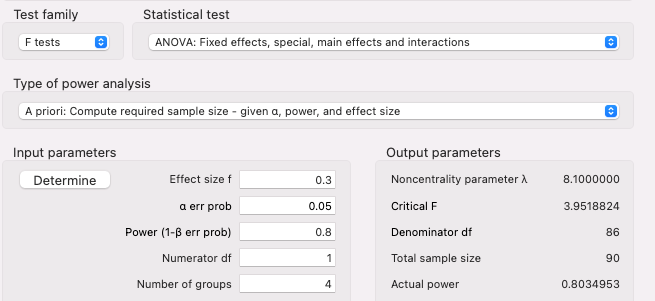

Labs
Materials for PS52007D Research Methods in Psychology
Weekly Materials
Preludes
Lectures
Labs
Extras
Labs
Module Coordinator - Dr. Gordon Wright
Labs
Below is a comprehensive list of labs.
Type
Week
Topic
Author
Date
Lab02
1. Complete the Pulse 2. Finalise your groups (3 or 4 people, all from same Personal Tutorial group) - Submit a list of names to your Lab Tutor
Dr. Gordon Wright
Lab03
Literature Search and CP Target Paper selection
1. Complete the Pulse (2 topics - 5 mins Max) 2. Consider how to approach the Critical Proposal to best effect 3. Start identifying candidate papers 1. Use the tools suggested below (or share others!)
Dr. Gordon Wright

Lab04
Variables, Design & Notation
Must conform to a 2x2 ANOVA with a single continuous DV
Dr. Gordon Wright
Tuesday, October 25, 2022

Lab05
Power Calculations
The formal definition of a p value is the probability of observing a result at least as extreme as the one observed, assuming the null hypothesis is true (e.g. Cohen, 1994).
Dr. Gordon Wright

Lab06
Online and Offline Data Collection
Qualtrics for survey-type administration and simple-ish stimulus presentation
Dr. Gordon Wright
Lab07
Dr. Gordon Wright
Lab08
Dr. Gordon Wright
Lab09
Dr. Gordon Wright
Lab10
Dr. Gordon Wright
No matching items